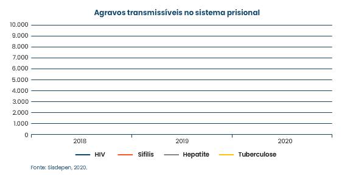

Observe no gráfico abaixo uma comparação entre o número de pessoas privadas de liberdade diagnosticadas com agravos transmissíveis nos anos de 2018, 2019 e 2020 com base nos dados do Sisdepen.
Clique no gráfico para ampliá-lo.
Fonte: Sisdepen, 2020.